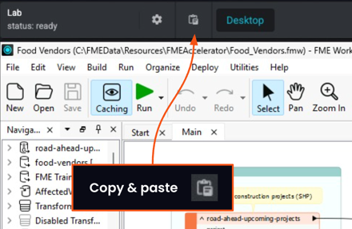

After completing this lesson, you'll be able to:
In this lesson, you will:
The MCPCaller transformer connects to an existing MCP server to work with MCP tools, resources, and prompts. The MCPCaller is the key component that enables FME to act as an MCP client, calling MCP tools on a server and receiving the output.

Within your FME workspace, the MCPCaller connects to an MCP server and issues a request. If the MCP server requires authentication, the MCPCaller uses a web connection to authorize access to the server. Each MCP server has a unique URL that you enter into the MCPCaller to connect to it. Using the URL, the MCPCaller connects and requests the MCP server when it runs. If the MCP server requires authentication, you may need to enable Override Server and enter the MCP server URL to override the URL you saved in the web connection. Every MCP server URL must support streamable HTTP transport.


The MCPCaller can perform various types of requests to the MCP server, from inquiries to executions. You can list and interact with tools, resources, and prompts. Instead of building a custom connector for each external service, FME can connect to an MCP server, inspect the tools it exposes, and call them consistently. You can then parse, transform, write, route, or combine the result with other data using standard FME transformers.
Depending on the MCP request method, the MCPCaller will require additional input data along with the request to the MCP server. For example, the call tool method requires you to select the tool and provide additional input as JSON.

The MCPCaller output varies by method, although all communication between the MCP server and client uses JSON as the protocol standard. To return the raw JSON of the MCP response for that operation, enable the Include JSON Response option in the Advanced section. This may be useful for inspecting the full server response or accessing fields the transformer doesn't otherwise expose as attributes.
The MCPCaller is an optional input transformer, meaning you don't need an input to run it. When you provide input records to the MCPCaller, it runs once per record received to the Input port. If you don't connect any input to the transformer, it will run only once. For more information on optional input transformers, see Transformers with an Optional Input Port.
The List Tools request returns a list of all available MCP tools from the server. It is a discovery inquiry about the MCP server you are working with and is the best place to start when working with MCP. Running a List Tools request confirms that the MCPCaller can connect to the server and returns the currently available tool names, descriptions, and schemas.
List Tools requires no additional input beyond setting the MCP server to query; however, the Advanced options let you control whether the MCPCaller returns each tool as an individual record or combines them into a single list.

The output from the MCPCaller List Tools includes the tool name, title, description, and JSON schemas for input and output. The List Tools results allow you or an AI model to analyze which tool best performs the task you need and which inputs you require to run the tool.

The Call Tool method requests the MCP server to run the tool you specify. If the MCPCaller has multiple inputs, it will make multiple Call Tool requests, one for each input record. If you don't provide input to the MCPCaller, it makes the Call Tool request only once and outputs a single record.
Once you select the tool to call, the MCPCaller parameters update to show you the input JSON schema the tool expects, along with a Tool Input section to configure. The JSON input to a tool may come from an Attribute or Text, or from a File containing the input JSON. To customize the tool input from your data, reference attribute values in the JSON Text.

The output from a Call Tool request creates a _data attribute containing the tool call's results in JSON. You can further parse the JSON into attributes with the JSONFragmenter to continue working with the MCP output in your workspace.


To start working with MCP and FME, Frank will connect to an existing weather MCP server using the MCPCaller in FME Workbench. He'll use the MCPCaller to discover what tools his MCP server provides and call a tool to return weather data and information. Eventually, Frank can integrate this workspace alongside his future utility data MCP server to provide real-time weather metrics with some of the utility data workflows.
In this exercise, you will:

Frank already has an external MCP server running and ready to connect to. It provides weather information based on an input location, such as forecasts and air quality metrics. Configure the MCPCaller to connect to this server.
http://weather-mcp:3000/mcp.
FME connects to the MCP server, discovers its available tools, and returns a feature for each available tool.

Now that you've used List Tools to see the available tools on the weather MCP server, you will use another MCPCaller to call a specific tool. The two MCPCallers are stand-alone for now; in the next exercise, you'll modify them to chain a dynamic tool call with AI.
http://weather-mcp:3000/mcp.
{
"current_weather": true,
"forecast_days": 7,
"latitude": 49.2827,
"longitude": -123.1207,
"precipitation_unit": "mm",
"temperature_unit": "celsius",
"timezone": "America/Vancouver",
"wind_speed_unit": "kmh"
}
This course requires a lot of copying and pasting to avoid typing out JSON and descriptions. To copy and paste content into your Strigo lab:

If you're having trouble pasting into the Strigo lab, log into the FME Academy in a browser in the lab and copy (Ctrl + C) and paste (Ctrl + V) directly within the lab.


So far, you've successfully connected to the weather MCP server, viewed its available tools, and called a tool directly with the MCPCaller. In the next lesson, you'll build on this by using an OpenAIConnector to dynamically select and call MCP tools based on user input, rather than configuring each tool call manually.